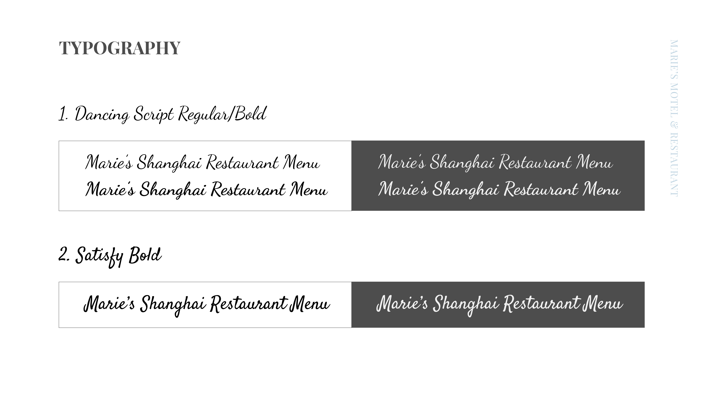
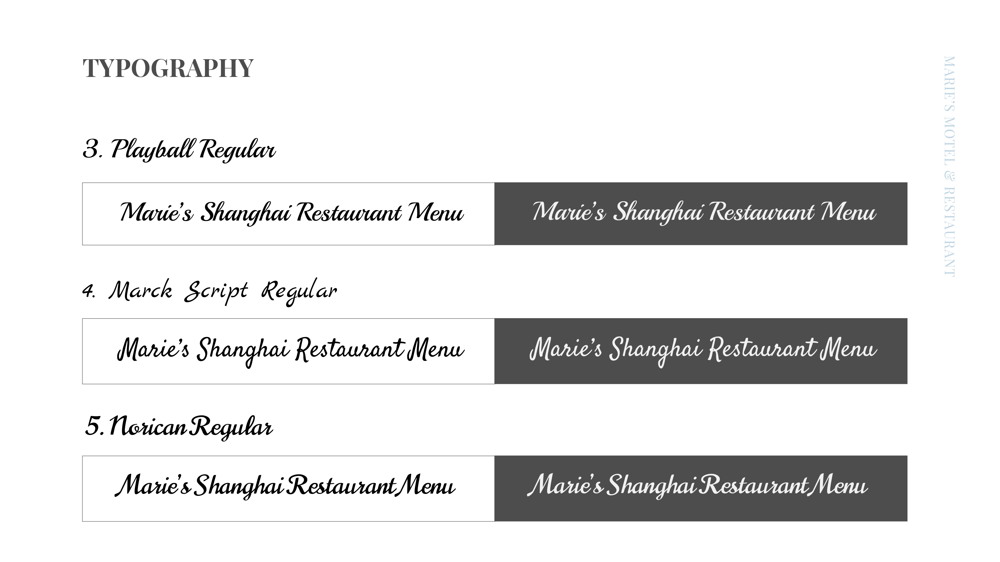
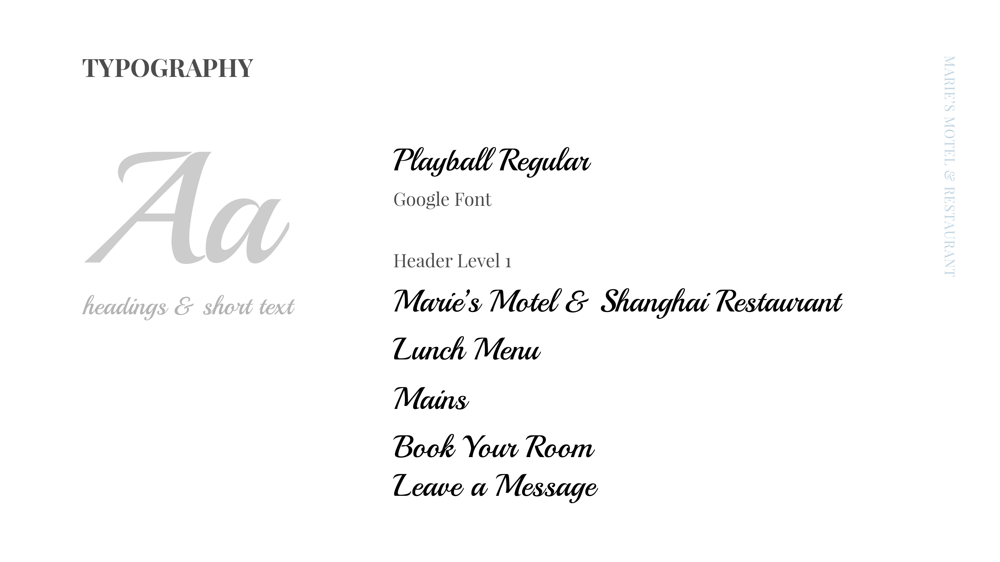
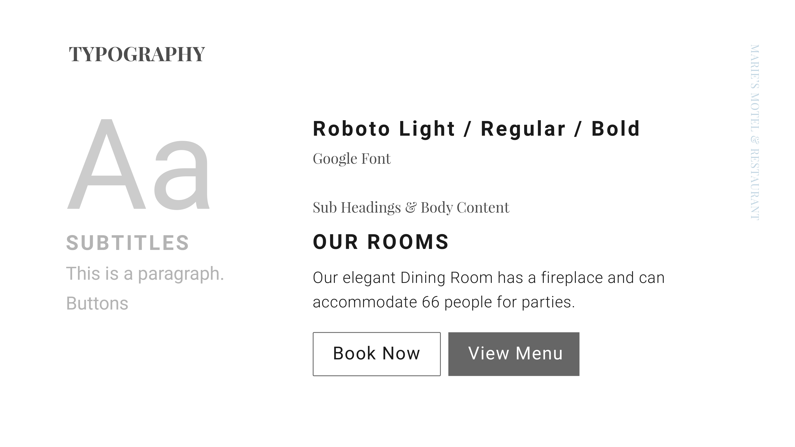
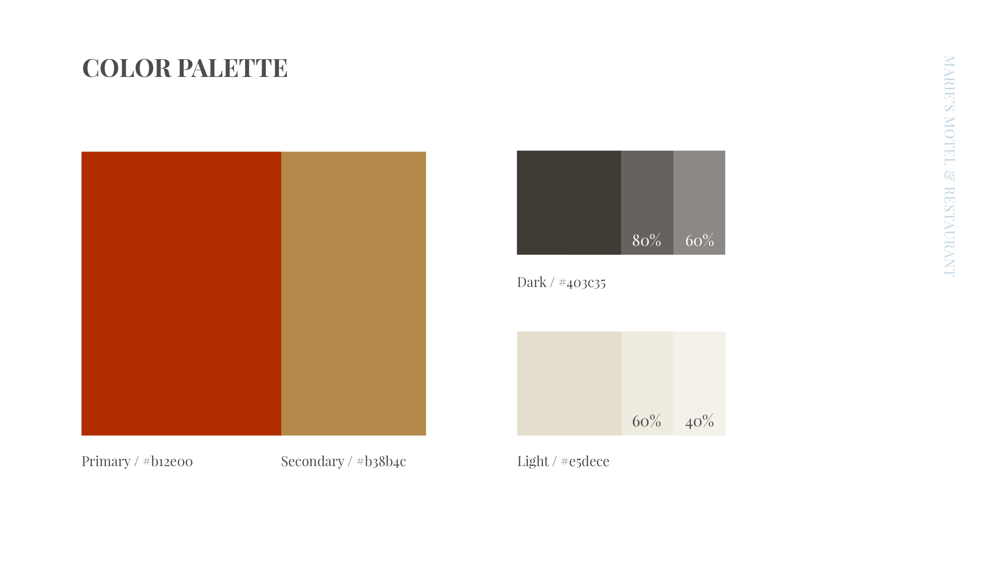
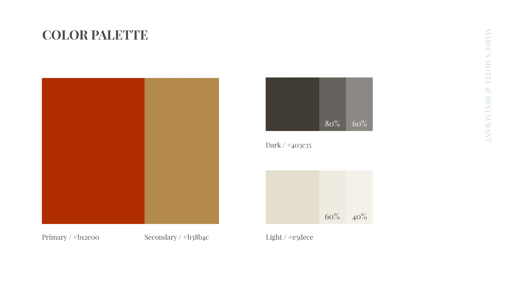
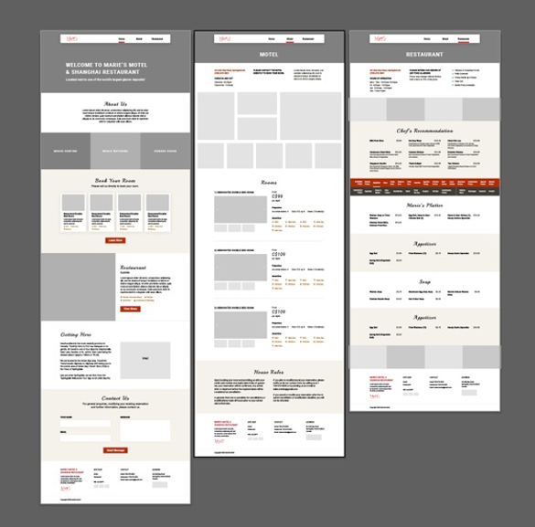

Building a Static Website Through Fast-Paced Workshops
How to act strategically despite limited time and budget
Sector Restaurant, Hotel
My Role Workshop Facilitation, Information Architecture, Webdesign, Branding
Project Time 3 weeks (before handoff to development)+2 weeks development
Context
The client is a hotel and restaurant in New Found Land. When they found me, there was already a simple website built with wix with some contact information and basic room type introduction.
Through communication, I found that the most important and core needs of customers have two aspects:
1. Increase a menu function, so that more customers who order takeaway can directly see the menu online. The customer's menu is more complicated, divided into two types: Chinese food and Canadian food. The classification inside is more complicated. There are some overlapping titles, but the content is different.
2. On the other hand, the customer believes that the User Interface on the previous page needs to be completely updated. They need to rebrand and make the website with a simple and modern style.
Research
Competitor search: Since the client do not have a clear plan for the effect of rebranding, we have investigated some company websites of the same type, organized and summarized them.
Through the layout analysis of the competitor's page and the existing information of the user, we put forward ideas about the use process.
Menu design
One of the biggest problems faced in this project is to put the menu. Because the user's menu is divided into two parts, and the client hoped that customers can see these two menus at the same time to make better choices.
Through searching, we designed a dual menu bar mode, using a horizontal slide bar to achieve the goal. In this way, users can think about whether they want to eat Chinese food or Western food at the same time, and can quickly select all the dishes they want to eat.
Two menu bars will stick with the page, even if the user clicks and jumps to a certain dish, they can quickly move to another menu.
The plan was quickly adopted in the meeting with the client.
User Interface studies
We provide font selections for the text, and conducted an expanded survey based on the font of the logo, and selected 5 fonts from the huge font library for customers to choose.
   Through the color analysis of competitors, combined with user logo and interior decoration photos, we can sort out a suitable color platte for the client.
 

A large number of photos of local tourist attractions and food photos that fit the theme have been chose for the client to choose from. During following iterations, most of the photos are replaced with real photos of the food taken by the client.
Prototypes
Low-Fi Mockup
High-Fi Mockup


Development
I developed the website with HTML5, CSS (Bootstrap) and Javascript. Also promoted the Google search ranking for the website.
This website is now public, you can click here to see it:

What I learned
During the design process, the user did not put forward very constructive opinions at the beginning. Just hope that we can "surprise them". In this way, investigations became necessary.
For customers whose data may change at any time, it would be helpful to prepare for adding information into the layout.
Designer should always consider the most convenient solution for the development team during the process. For example, first confirm the equipment to be used with the customer, and develop a design draft suitable for the development framework.